For patients with early stage breast carcinoma, the ability to achieve complete tumor resection with breast conservation therapy (BCT) remains imperfect despite advances in surgical, pathologic and imaging techniques. The goal of BCT is to remove a patient’s breast cancer with negative surgical margins while achieving a cosmetically acceptable result. The presence or absences of malignant cells on the edge or close to the edge of a lumpectomy specimen is called the surgical margin, and it serves as a marker of residual disease in the breast.
Currently re-excision rates to achieve clear margins in the United States range between 15-40%. The negative impacts of re-excision include delays in the completion of adjuvant therapies, increased infection rates, increased health care costs, increased mastectomy rates and negative psychological impacts on the patients. The principle of clear margins is imperative since presence of positive margins is associated with increased loco-regional recurrence, and the failure to maintain local control is associated with a decrease in long-term breast cancer specific survival.
In AMIGO, we are studying the use of novel intraoperative mass spectrometry and magnetic resonance imaging (MRI) as methods to detect residual cancer in the hopes of reducing the rates of re-excision for breast cancer patients. AMIGO enables surgeons to incorporate existing and novel imaging technologies including intraoperative MRI and mass spectrometry, to efficiently and precisely guide treatment — before, during, and after surgery — without the patient or medical team ever leaving the operating room.
It is our hypothesis that utilizing intra-procedural mass spectrometry and breast MRI will allow for improved visualization and characterization of tumors and breast-tumor biomarkers that will be effective in assessing tumor margins and areas of residual disease. Ultimately we hope that implementation of these advanced imaging technologies during breast surgery will allow surgeons to achieve more precise excisions and successful first-surgery clear margin rates, ultimately hopefully avoiding the need for further operations.
Mehra Golshan MD FACS
Distinguished Chair in Surgical Oncology
If you are a patient and would like to learn about the offerings of AMIGO, please visit the BWH AMIGO page.
Review the clinical trial here.
Study Contact:
Stephen (Dan) DeSantis
Breast Conserving Surgery Workflow in AMIGO
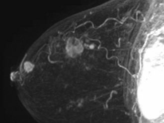
Diagnostic Imaging
3D volume rendered MIP images showing the main mass and satellites. The presence of satellite tumors poses a difficulty in ensuring complete tumor resection.
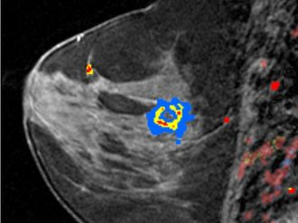
Diagnostic Imaging
Color overlay by a Computer-aided software over the rapidly enhancing mass (invasive ductal cancer).
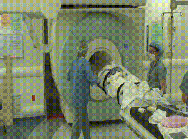
Preoperative
In the AMIGO operating room the patient is placed under general anesthesia. A contrast enhanced 3D MRI then is performed while the patient is in supine position. In this case, an MRI is performed before and after contrast injection, delineating the tumor boundaries in relationship to fixed landmarks. Upon completion of the preprocedural MRI, the MRI machine leaves the room and the images are evaluated.
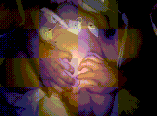
Intraoperative
The woman’s breast is then prepared and draped in standard sterile fashion. Through palpation, the tumor is identified and surgical incisions marked.
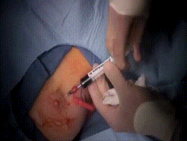
Intraoperative
As part of the lymph node evaluation procedure, marcaine and 2cc of 1% methylene blue diluted with 3cc of saline are injected. The breast is then massaged to distribute the methylene blue to the lymphatics before beginning the incision between the pectorals and latissimus muscles, below the marked line.
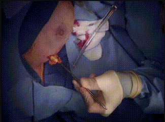
Intraoperative
The methylene blue renders the sentinel lymph nodes detectable. The lymph nodes sent to pathology for evaluation. After the lumpectomy is performed, the resected tumor is sent to pathology.
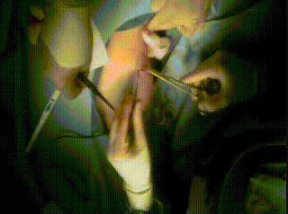
Intraoperative
The lumpectomy cavity is temporarily closed with a nylon suture.
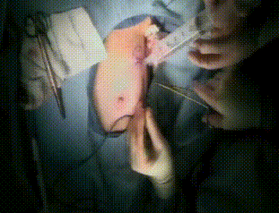
Intraoperative
Before completing closure, the lumpectomy cavity is filled with exact volume of resected tumor and a 1cm margin. Finally, the incision is covered.
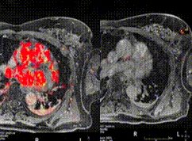
Postoperative
Immediately post-surgery, a second MRI scan (again, with contrast) is obtained while the patient is on the operating table. The purpose of this MRI is to examine the saline filled cavity to identify areas of enhancement that may be suspicious for residual carcinoma. Following the imaging, the MRI scanner leaves the operating room. A radiologist compares the resected tumor to an MRI of the second breast for possible areas of residual tissue. On the left side, the preoperative images are shown; on the right side, the new images are displayed.
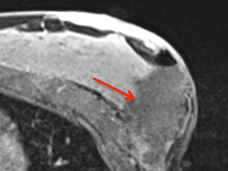
Postoperative
Post-surgical post-contrast MRI showing the saline cavity filled with saline.
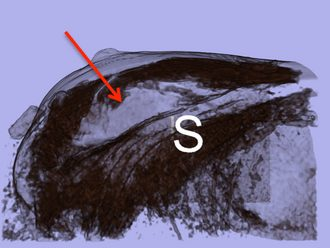
Postoperative
3D volume rendered image showing the surgical cavity.
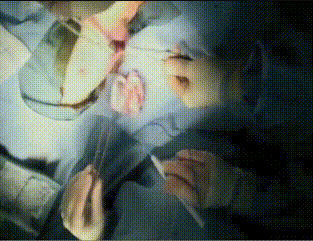
Re-excision
If suspicious remaining tissue is detected on the MRI images, the breast is reopened and the residual tumor removed.
Media Coverage
- Amigo Innovative Breast Cancer Surgery. Nexstar Broadcasting, Inc.- August 14, 2013
- New Operating Room at BWH Helps Breast Cancer Patients Avoid Multiple Surgeries. CBS Boston – December 7, 2012
- Reducing Repeat Surgeries After Breast Cancer. BWH Health Hub – January, 2013
- The Fine Line Between Breast Cancer and Normal Tissue. MedicalPress – September, 2014
Recent Publications
- Basu SS, Stopka SA, Abdelmoula WM, Randall EC, Gimenez-Cassina Lopez B, Regan MS, Calligaris D, Lu FF, Norton I, Mallory MA, Santagata S, Dillon DA, Golshan M, Agar NYR. Interim Clinical Trial Analysis of Intraoperative Mass Spectrometry for Breast Cancer Surgery. NPJ Breast Cancer. 2021 Sep 9;7(1):116. PMID: 34504095; PMC8429658.
- Wong SM, Freedman RA, Sagara Y, Aydogan F, Barry WT, Golshan M. Growing Use of Contralateral Prophylactic Mastectomy Despite no Improvement in Long-term Survival for Invasive Breast Cancer. Ann Surg. 2017;265 (3) :581-9. PMID: 28169929.
- Mallory MA, Sagara Y, Aydogan F, Desantis S, Jayender J, Caragacianu D, Gombos E, Vosburgh KG, Jolesz FA, Golshan M. Feasibility of Intraoperative Breast MRI and the Role of Prone Versus Supine Positioning in Surgical Planning for Breast-Conserving Surgery. Breast J. 2017;23 (6) :713-7. PMID: 28295903; PMC5592119.
- Chou S-HS, Gombos EC, Chikarmane SA, Giess CS, Jayender J. Computer-Aided Heterogeneity Analysis in Breast MR Imaging Assessment of Ductal Carcinoma In Situ: Correlating Histologic Grade and Receptor Status. J Magn Reson Imaging. 2017;46 (6) :1748-59. PMID: 28371110; PMC5624816.
- Mallory MA, Losk K, Camuso K, Caterson S, Nimbkar S, Golshan M. Does “Two is Better Than One” Apply to Surgeons? Comparing Single-Surgeon Versus Co-surgeon Bilateral Mastectomies. Ann Surg Oncol. 2016;23 (4) :1111-6. PMID: 26514122; PMC4775338.
- Gombos EC, Jayender J, Richman DM, Caragacianu DL, Mallory MA, Jolesz FA, Golshan M. Intraoperative Supine Breast MR Imaging to Quantify Tumor Deformation and Detection of Residual Breast Cancer: Preliminary Results. Radiology. 2016;281 (3) :720-9.PMID: 27332738; PMC5118055.
- Leong LCH, Gombos EC, Jagadeesan J, Fook-Chong SMC. MRI Kinetics With Volumetric Analysis in Correlation With Hormonal Receptor Subtypes and Histologic Grade of Invasive Breast Cancers. AJR Am J Roentgenol. 2015;204 (3) :W348-56. PMID: 25714321; PMC4851553.
- Gombos EC, Jagadeesan J, Richman DM, Kacher DF. Magnetic Resonance Imaging-Guided Breast Interventions: Role in Biopsy Targeting and Lumpectomies. Magn Reson Imaging Clin N Am. 2015;23 (4) :547-61. PMID: 26499274; PMC4621771.
- Golshan M, Sagara Y, Wexelman B, Aydogan F, Desantis S, Elise Min H, Vosburgh K, Jagadeesan J, Caragacianu D, Gombos E, et al. Pilot Study to Evaluate Feasibility of Image-Guided Breast-Conserving Therapy in the Advanced Multimodal Image-Guided Operating (AMIGO) Suite. Ann Surg Oncol. 2014;21 (10) :3356-7. PMID: 25047476; PMC4697273.
- Calligaris D, Caragacianu D, Liu X, Norton I, Thompson CJ, Richardson AL, Golshan M, Easterling ML, Santagata S, Dillon DA, et al. Application of Desorption Electrospray Ionization Mass Spectrometry Imaging in Breast Cancer Margin Analysis. Proc Natl Acad Sci U S A. 2014;111 (42) :15184-9. PMID: 25246570; PMC4210338.
- Jayender J, Chikarmane S, Jolesz FA, Gombos E. Automatic Segmentation of Invasive Breast Carcinomas from Dynamic Contrast-Enhanced MRi using Time Series Analysis. J Magn Reson Imaging. 2014;40 (2) :467-75. PMID: 24115175; PMC3962815.
Content carried over from https://ncigt.org/breast-cancer-surgery/.